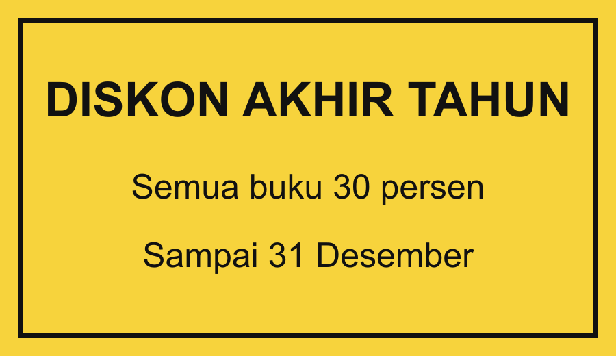
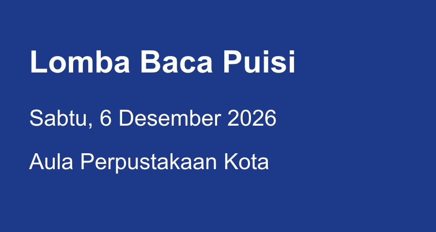
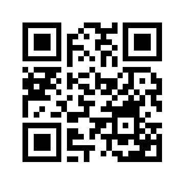
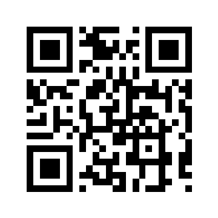
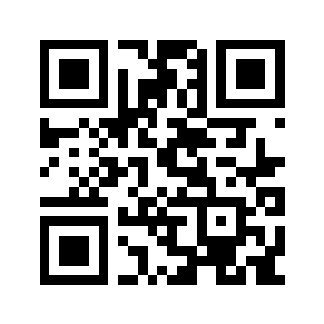
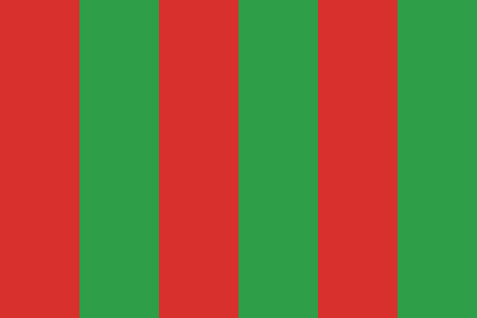
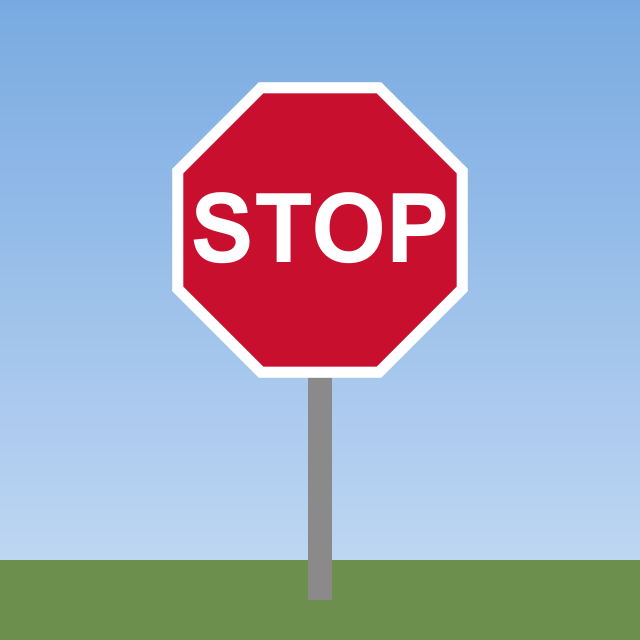
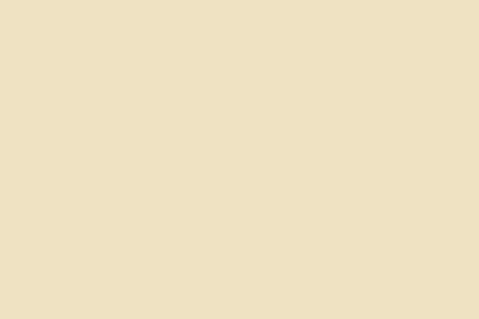
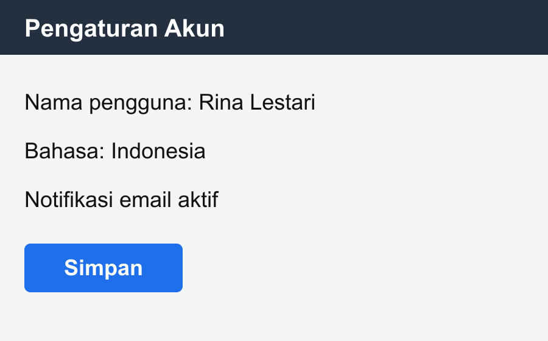

Halaman Uji Lapis Lokal — Benda, Warna, Tulisan, Kode QR
Semua gambar di halaman ini digambar dengan kode (examples/buat_gambar_lapis_lokal.mjs),
bukan unduhan. Tidak ada gambar yang memakai alt, supaya semuanya muncul di panel NaraVisi.
Tekan Alt+Shift+K. Panel seharusnya menampilkan 10 gambar. Pilih dengan panah, tekan Enter. Bila AI butuh lebih dari 1 detik, NaraVisi lebih dulu membacakan lapis lokal (kolom 2), lalu deskripsi AI menyusul. Bila layanan AI atau backend dimatikan, yang terdengar adalah kolom 3, diikuti alasan galatnya.
| No. | Gambar | Lapis lokal sambil menunggu AI (diukur dengan detektor asli) | Saat AI/server mati |
|---|---|---|---|
| 1 | Poster diskon | Warna dominan: kuning. Tulisan: "DISKON AKHIR TAHUN Semua buku 30 persen Sampai 31 Desember". | Deskripsi sederhana (tanpa AI): tidak ada benda yang dikenali. Warna dominan: kuning. Tulisan: "DISKON AKHIR TAHUN Semua buku 30 persen Sampai 31 Desember". |
| 2 | Poster acara (tulisan putih) | Warna dominan: biru. Tulisan: "Lomba Baca Puisi Sabtu, 6 Desember 2026 Aula Perpustakaan Kota". | Deskripsi sederhana (tanpa AI): tidak ada benda yang dikenali. Warna dominan: biru. Tulisan: "…" (sama seperti kolom 2). |
| 3 | QR ke https://example.com | Warna dominan: putih dan hitam. Ada kode QR menuju example.com.
Tombol Salin tautan example.com dan Buka example.com… muncul. |
Deskripsi sederhana (tanpa AI): tidak ada benda yang dikenali. Warna dominan: putih dan hitam. Ada kode QR menuju example.com. |
| 4 | QR berbahaya javascript:alert(1) | Warna dominan: putih dan hitam. Ada kode QR berisi teks.
Tidak ada tombol tautan; kata "javascript" tidak pernah dibacakan. |
Deskripsi sederhana (tanpa AI): tidak ada benda yang dikenali. Warna dominan: putih dan hitam. Ada kode QR berisi teks. |
| 5 | QR berisi teks | Warna dominan: putih dan hitam. Ada kode QR berisi teks: Ruang baca lantai 2. | Deskripsi sederhana (tanpa AI): tidak ada benda yang dikenali. Warna dominan: putih dan hitam. Ada kode QR berisi teks: Ruang baca lantai 2. |
| 6 | Dua warna (biru 60%, putih 40%) | Warna dominan: biru dan putih. | Deskripsi sederhana (tanpa AI): tidak ada benda yang dikenali. Warna dominan: biru dan putih. |
| 7 | Garis merah-hijau | Warna dominan: hijau dan merah. | Deskripsi sederhana (tanpa AI): tidak ada benda yang dikenali. Warna dominan: hijau dan merah. |
| 8 | "Foto" benda: rambu STOP | Kemungkinan berisi: 1 rambu berhenti. Warna dominan: biru. | Deskripsi sederhana (tanpa AI): kemungkinan berisi 1 rambu berhenti. Warna dominan: biru. |
| 9 | Bidang krem polos | Warna dominan: krem. Dilewati oleh Mode Baca Berurutan (tanpa AI, tanpa kuota). |
Deskripsi sederhana (tanpa AI): gambar hampir polos, tidak ada benda yang dikenali. Warna dominan: krem. |
| 10 | Tangkapan layar aplikasi | Warna dominan: putih dan hitam. Tulisan: "Pengaturan Akun Nama pengguna: Rina Lestari Bahasa: Indonesia Notifikasi email aktif". | Deskripsi sederhana (tanpa AI): tidak ada benda yang dikenali. Warna dominan: putih dan hitam. Tulisan: "…" (sama seperti kolom 2). |
Setelah deskripsi Gemini, tulisan tidak dibacakan ulang bila Gemini sudah
menyalinnya; info kode QR selalu ditambahkan bila belum terdengar. Pada nomor 8, kata "STOP" pada rambu hanya 1 kata,
jadi sengaja tidak dibacakan sebagai tulisan (minimal 3 kata bermakna). Pada nomor 10, tulisan putih "Simpan" di tombol
biru tidak terbaca oleh pembaca teks lokal (dicatat apa adanya). Gambar buatan bisa dikenali sedikit berbeda di
perangkat lain; catat perbedaannya di docs/PENGUJIAN.md.








